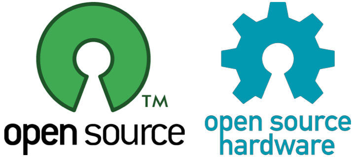

One example of such a shared ecosystem is the TUIO protocol which has been designed to encode and transport a low-level interface abstraction within a wide variety of settings, from tangible user interfaces to multi-touch tabletops. However, our community also needs further implementations of common middle-ware solutions such as gesture-recognition or object classification as well as their integration into high-level development frameworks. Furthermore it would be also desirable to establish a shared collection of building-blocks at the hardware-level. Such a common ecosystem may not only accelerate the development efforts of our community, but should also ensure the scientific quality control through reproducible and comparable results.
Objectives
The goal for this workshop is to gather researchers and practitioners who work on standardizing and streamlining development for software and hardware interfaces in the ITS context, learn about their ongoing efforts and identify possible roadblocks to a wider adoption. We hope to initiate a small developer community in which future efforts can be planned, discussed and collaboratively developed, with a strong focus on shared standards, open source software as well as open design hardware implementations.Call for Participation
We invite researchers & practitioners who work on protocols, frameworks, APIs and similar efforts in the realm of interactive surfaces and tangible interaction to submit position papers describing their ongoing work on these topics. Position papers should be between 2 and 4 pages in length and follow the ACM SIGCHI Extended Abstract format. A jury will select the submissions based on their connection to the workshop topic as well as their suitability for stimulating discussion and ideas for future collaboration. Accepted papers will be archived on the workshop homepage.Submission Deadlines
Position paper submission: September 11th, 2015Notification of acceptance: September 18th, 2015
Submit your paper by email to workshop@gispl.org.